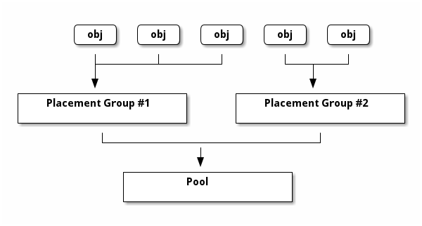
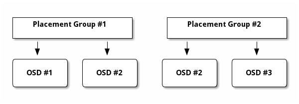

Notice
This document is for a development version of Ceph.
归置组
归置组（ PG ）是每个逻辑 Ceph 存储池的子集。 归置组的功能是将对象们（作为一个组）归置进 OSD 。 Ceph 内部以归置组粒度管理数据： 这比管理单个 RADOS 对象的扩展性更好。 归置组较多（例如，每个 OSD 有 150 个归置组）的集群比拥有较少归置组的同等集群的平衡性更好。
Ceph 内部的 RADOS 对象各自都会映射到一个特定的归置组， 每个归置组只能属于一个 Ceph 存储池。
请参阅 Sage Weil 的博文： Nautilus 新功能： PG 合并和自动调整 了解归置组与存储池和对象之间的关系。
自动伸缩归置组
归置组（ PG ）是 Ceph 如何分配数据的一个具体的内部实现。
自动伸缩（ autoscaling ）提供了一种管理 PG ，
尤其是管理不同存储池中 PG 数量的方法。
启用 pg-autoscaling 后，集群就能根据集群利用率和预期的存储池利用率对每个存储池的 PG 数量（ pgp_num ）
提出建议或自动调整。
每个存储池都有一个 pg_autoscale_mode 属性，可以设置为
off 、 on 、或 warn ：
off: 此存储池禁用自动伸缩。 由管理员为各个存储池确定合适的pgp_num。 详情参考 确定 PG 数量 。on: 在指定存储池上启用 PG 数的自动调整。warn: PG 数应该调整时发出健康报警。
给现有存储池设置自动伸缩模式， 执行下列命令：
ceph osd pool set <pool-name> pg_autoscale_mode <mode>
例如，要在 foo 存储池上启用自动伸缩，执行下列命令：
ceph osd pool set foo pg_autoscale_mode on
你也可以配置默认的 pg_autoscale_mode ，
它将应用于之后创建的所有存储池。用下列命令更改此配置：
ceph config set global osd_pool_default_pg_autoscale_mode <mode>
您可以使用 noautoscale 标志禁用或启用所有存储池的自动伸缩功能。
默认情况下，该标记设置为关闭 off ，
但可以通过运行以下命令将其设置为开启 on ：
ceph osd pool set noautoscale
要把 noautoscale 标志设置为 off ，执行下列命令：
ceph osd pool unset noautoscale
要查看这个标志现在的样子，执行下列命令：
ceph osd pool get noautoscale
查看 PG 伸缩建议
查看各个存储池，其相对利用率、以及 PG 数建议的更改数值，执行下列命令：
ceph osd pool autoscale-status
命令输出形似如下：
POOL SIZE TARGET SIZE RATE RAW CAPACITY RATIO TARGET RATIO EFFECTIVE RATIO BIAS PG_NUM NEW PG_NUM AUTOSCALE BULK
a 12900M 3.0 82431M 0.4695 8 128 warn True
c 0 3.0 82431M 0.0000 0.2000 0.9884 1.0 1 64 warn True
b 0 953.6M 3.0 82431M 0.0347 8 warn False
POOL 是存储池的名字
SIZE 是这个存储池内的数据量
TARGET SIZE （如果存在）是此存储池预计要存储的数据量， 由管理员指定。系统会使用两个值中较大的一个进行计算。
RATE 是存储池的倍率，能决定消耗多少原始存储容量。 例如，一个三副本存储池的倍率为 3.0 ， 一个
k=4 m=2的纠删码存储池的倍率为 1.5 。RAW CAPACITY 是负责存储池数据 （也许还有其他存储池的数据） 的特定 OSD 上原始存储容量的总量。
RATIO 是比率， (1) 存储池消耗的存储空间与 (2) 原始存储总容量的比率。换句话说， RATIO 的定义是 (SIZE * RATE) / RAW CAPACITY 。
TARGET RATIO （如果存在）是此存储池的预期存储量 （即管理员指定的，此存储池预计会消耗的存储量） 与所有其他已设置目标比率的存储池的总预期存储量之比。 如果同时指定
target_size_bytes和target_size_ratio， 则target_size_ratio优先。EFFECTIVE RATIO 是对目标比率进行两次调整的结果：
减去已设置目标尺寸的存储池预计使用的所有容量。
对于已设置目标比率的存储池， 把它们的目标比率进行归一化处理， 使它们统称为目标集群容量。例如， 四个 target_ratio 为 1.0 的存储池的有效比率为 0.25 。
系统在计算时会使用这两个比率 （即目标比率和有效比率）中较大的一个。
BIAS 是用于手动调整存储池 PG 数的一个乘数， 根据先前的信息，预估某个指定存储池应该有多少个 PG 。
PG_NUM 是与存储池相关联的当前 PG 数量， 或者，如果正在进行
pg_num变更， 则是该存储池正要实现的当前 PG 数量。NEW PG_NUM （如果存在）是系统建议的存储池
pg_num值。 它总是 2 的幂次， 只有当建议值与当前值的差异超过默认系数 3 时才会出现。 要调整这个倍数（在下面的示例中， 它被改为 2），执行以下命令：ceph osd pool set threshold 2.0AUTOSCALE 是存储池的
pg_autoscale_mode，可设置为on、off或warn。BULK 指明此存储池是否为巨型的（
bulk）， 它的值为True或False。巨型池（ bulk pool ）预计规模会很大， 而且应该一开始就拥有大量 PG ，这样性能才不会受到影响。 另一方面，非巨型存储池的规模应该较小 （例如.mgr存储池或元数据存储池）。
Note
如果 ceph osd pool autoscale-status 命令什么也没有输出，
那么有可能至少有一个存储池跨越了多个 CRUSH 根节点。
这种 “跨越存储池” 的问题可能出现在以下情形：
当新部署的集群在 CRUSH 的 default 根上自动创建 .mgr 池时，
后续创建存储池时，给它们分配的规则会限制在特定的 CRUSH 影子树上。
例如，假设创建了一个 RBD 元数据存储池，
并分配 deviceclass = ssd ，
还有个 RBD 数据存储池分配了 deviceclass = hdd ，
就会遇到这个问题。
要解决这个问题，请将存储池限制为只有一个设备类别。
在上述场景下，可能有一个 replicated-ssd CRUSH 规则正在生效，
可以通过运行以下命令将 .mgr 存储池分配给 ssd 设备：
ceph osd pool set .mgr crush_rule replicated-ssd
这种干预会导致少量回填， 但通常这种流量会很快完成。
自动化的伸缩
在自动伸缩的方法中，最简单的可以允许集群根据使用情况自动伸缩 pgp_num 。
Ceph 会考虑整个系统的总空闲空间和 PG 的目标数量、
考虑每个存储池中存储了多少数据，并相应地分配 PG 。
系统的做法比较保守，只有在当前 PG 数量（ pg_num ）与建议数量相差超过 3 倍时，才会对存储池进行更改。
每个 OSD 的目标 PG 数由 mon_target_pg_per_osd
参数（默认值： 100 ）决定，
可执行以下命令进行调整：
ceph config set global mon_target_pg_per_osd 100
自动伸缩器会分析存储池，并根据每个子树进行调整。
由于每个存储池可能映射到不同的 CRUSH 规则，
而每个规则可能会把数据摊派到不同的设备上，
因此 Ceph 将独立考虑分级结构中每个子树的利用率。例如，
映射到 ssd 类 OSD 的存储池和映射到 hdd 类 OSD 的存储池各自的最佳 PG 数量将取决于这两种不同类型设备的数量。
如果存储池使用了两个或更多 CRUSH 根下的 OSD
（例如，同时使用 ssd 和 hdd 设备的影子树），
自动伸缩器会在管理器日志中向用户发出警告。
警告中会指出存储池的名称和哪些根相互重叠了。
自动伸缩器不会伸缩任何有重叠根的存储池，
因为这种情况会导致伸缩过程出现问题。
我们建议把每个存储池都限定在一个根内（即一个 OSD 类别），
以消除警告并确保缩放过程成功。
管理带有 bulk 标志的存储池
如果一个存储池打了 bulk 标志，那么自动伸缩器在启动存储池时就会创建所有 PG ，只有当整个存储池的使用率不均衡时，
才会缩减 PG 的数量。但是，如果一个存储池没有打 bulk 标志，
那么自动伸缩器会以最少的 PG 启动这个存储池，
只有当存储池的使用量增加时，才会另外创建 PG 。
要创建一个带 bulk 标志的存储池，执行以下命令：
ceph osd pool create <pool-name> --bulk
要设置或者取消现有存储池的 bulk 标志，执行以下命令：
ceph osd pool set <pool-name> bulk <true/false/1/0>
要查看现有存储池的 bulk 标志，执行以下命令：
ceph osd pool get <pool-name> bulk
配置期望的存储池尺寸
集群或存储池刚创建时，只消耗了集群总容量的一小部分，
在系统看来应该只需要少量的 PG 。
但在某些情况下，集群管理员知道长期运行后，
哪些存储池可能会消耗系统的大部分容量。
如果向 Ceph 提供了这些信息，可以从一开始就分配更合适的 PG 数量，
从而避免随后更改 pg_num 以及随之而来的重新归位数据带来的开销。
存储池的目标大小（ target size ）有两种指定方式：
一种是设置存储池的绝对大小（以字节为单位），
一种是相对于所有其他设置了 target_size_ratio 的存储池的权重。
例如，告诉系统， mypool 预计会消耗 100 TB，
执行以下命令：
ceph osd pool set mypool target_size_bytes 100T
或者告诉系统，相对于其他设置了 target_size_ratio 的存储池，
mypool 存储池预计消耗比率为 1.0 ，
要调整 mypool 的 target_size_ratio 选项的值，
执行以下命令：
ceph osd pool set mypool target_size_ratio 1.0
如果 mypool 是集群中唯一的存储池，那么预计它会用掉集群总容量的 100% 。
但是，如果集群中包含第二个存储池，
它的 target_size_ratio 设置成了 1.0 ，
那么预计两个存储池各自将使用集群总容量的 50% 。
命令 ceph osd pool create 有两个命令行选项，
可在创建存储池时设置其目标大小：
--target-size-bytes <bytes> 和 --target-size-ratio <ratio> 。
注意，如果指定的目标大小值（ target-size value ）不可能实现
（例如，指定的容量比整个集群都大），则会触发健康检查消息
（ POOL_TARGET_SIZE_BYTES_OVERCOMMITTED ）。
如果同时为存储池指定了 target_size_ratio 和 target_size_bytes ，
那么后者将被忽略，前者将用于系统计算，
并触发健康检查消息（ POOL_HAS_TARGET_SIZE_BYTES_AND_RATIO ）。
设置存储池的 PG 数量界限
可以给存储池指定最小 PG 数和最大 PG 数。
设置最小 PG 数和最大 PG 数
如果设置了最小值，则 Ceph 自己不会将 PG 数量缩减 （也不建议您缩减）到配置值以下。 设置最小值的目的是为了给客户端 I/O 过程的并行数量设定一个下限， 即使存储池大部分是空的也是如此。
如果设置了最大值，则 Ceph 自己不会将 PG 数量增加 （也不建议您增加）到配置值以上。
要设置存储池的最小 PG 数量， 执行以下形式的命令：
ceph osd pool set <pool-name> pg_num_min <num>
要设置存储池的最大 PG 数，执行以下命令：
ceph osd pool set <pool-name> pg_num_max <num>
另外，命令 ceph osd pool create 有两个命令行选项，
可以用于在创建时指定存储池的最小或最大 PG 数：
--pg-num-min <num> 和 --pg-num-max <num> 。
预定义 pg_num
用下列命令创建存储池时，你可以加选项预先设置 pg_num 参数的值：
ceph osd pool create {pool-name} [pg_num]
如果你不在这个命令里指定 pg_num ，
集群会基于存储池内的数据量，用 PG 自动伸缩器自动配置这个参数，
（见 自动伸缩归置组 ）。
不过，创建时指定或不指定 pg_num 对以后集群是否会自动调整该参数没有任何影响。
在前面已经叙述过， PG 的自动伸缩是通过运行以下命令启用或禁用的：
ceph osd pool set {pool-name} pg_autoscale_mode (on|off|warn)
在没有均衡器的情况下，建议的目标是每个 OSD 上大约 100 个 PG 副本。 有均衡器时，初始目标为每个 OSD 上 50 个 PG 副本是合理的。
自动伸缩器试图满足以下条件：
每个 OSD 上的 PG 数量应该与存储池中的数据量成比例
每个存储池应该有 50-100 个 PG ， 包括复制开销或纠删码扇出时各个 PG 在 OSD 上的数量。
归置组的使用
存储池内的归置组（ PG ）把对象汇聚在一起， 因为跟踪每一个 RADOS 对象的位置及其元数据的计算代价太大—— 即一个拥有数百万对象的系统，不可能在对象这一级追踪位置。

Ceph 客户端会计算一个 RADOS 对象应该位于哪个归置组里。 计算时，客户端先给对象 ID 做散列计算， 然后再根据指定存储池里的 PG 数量、存储池 ID 做一个运算。 详情见 PG 映射到 OSD 。
PG 内一个 RADOS 对象的内容存储在一组 OSD 中。 例如，在副本数为 2 的多副本存储池中，每个 PG 将在两个 OSD 上存储对象， 如下图所示：

如果 OSD #2 出现故障，另一个 OSD 将被分配给归置组 #1 ， 然后用 OSD #1 中所有对象的副本来填充。如果存储池的副本数从两个变为三个， 则将为 PG 分配另一个 OSD ，它将接收 PG 中所有对象的副本。
分配给 PG 的 OSD 并没有被这个 PG 独占， 而是与来自同一存储池或其他存储池的其他 PG 共享。 在本例中， OSD #2 由归置组 #1 和归置组 #2 共享。 如果 OSD #2 出现故障，那么归置组 #2 必须恢复对象副本 （利用 OSD #3 ）。
PG 数量增加时，会产生几种后果。 新 PG 会被分配 OSD 。 CRUSH 函数的结果会发生变化， 这意味着现有 PG 中的某些对象会被复制到新 PG 中， 并从旧的 PG 中移除。
指定 pg_num 时的相关因素
一方面，从数据的持久性和在 OSD 之间的均匀分布来看，使用较多的 PG 比较好； 另一方面，从节省 CPU 资源和尽量减少内存使用量的角度考虑， PG 数量越少越好。
数据持久性
当 OSD 出现故障时，数据丢失的风险就会增加， 除非它托管的数据已经恢复到配置的级别。为了说明这一点， 让我们设想一种情形，会导致一个 PG 内数据永久丢失：
某一 OSD 出现故障，其中包含的对象副本全部丢失。 对于 PG 中的每个对象，其副本数量突然从三个减少到两个。
Ceph 开始恢复此 PG ，选取一个新的 OSD ， 并在该 OSD 上重新创建每个对象的第三个副本。
同一个 PG 中的另一个 OSD 在新 OSD 完全填充好第三个副本之前发生了故障。 这样，某些对象将只有一个副本仍健在。
Ceph 选择了另一个 OSD ，并继续复制对象， 以恢复到期望的副本数。
这个 PG 中的第三个 OSD 在恢复完成前发生了故障。 如果该 OSD 恰好包含某一对象的唯一剩余副本， 则这个对象将永久丢失。
在一个包含 10 个 OSD 和 512 个 PG 的三副本存储池集群中， CRUSH 将为每个 PG 分配三个 OSD 。最终， 每个 OSD 承载 \(\frac{(512 * 3)}{10} = ~150\) 个 PG 。 因此，在上述情形下，当第一个 OSD 出现故障时，所有 150 个 PG 将同时开始恢复。
被恢复的 150 个 PG 可能会均匀地分布在剩余的 9 个 OSD 中。 因此，每个仍健在的 OSD 都有可能向所有其他 OSD 发送对象副本， 也有可能要存入一些新对象， 因为它已成为新 PG 的一部分。
完成此类恢复所需的时间取决于 Ceph 集群的架构。 比较两种配置情况：(1) 每个 OSD 由单台计算机上的 1 TB SSD 托管，所有 OSD 都连接到 10 Gb/s 交换机， 单个 OSD 的恢复在可确定的分钟数内完成。 (2) 每台计算机上有两个 OSD ，使用的是不带 SSD WAL+DB 的 HDD 和 1 Gb/s 交换机。在第二种配置中， 恢复速度至少要慢一个数量级。
在这样的集群中， PG 的数量对数据的持久性几乎没有影响。 无论每个 OSD 有 128 个 PG 还是 8192 个 PG， 恢复速度都不会更慢或更快。
不过，增加 OSD 的数量可以提高恢复速度。 假设我们的 Ceph 集群从 10 个 OSD 扩展到 20 个 OSD 。 每个 OSD 现在只参与 ~75 个 PG，而不是 ~150 个 PG。 所有健在的 19 个 OSD 仍然需要复制同样数量的对象才能恢复。 但现在有 20 个 OSD ，每个只需复制 50 GB， 而不是原来的 10 个 OSD ，每个需要复制 ~100 GB 。 如果以前网络是瓶颈，那么现在的恢复速度是以前的两倍。
同样，假设我们的集群发展到 40 个 OSD 。每个 OSD 将只托管 ~38 个 PG 。 如果一个 OSD 掉线，恢复速度会比以前更快， 除非它被另一个瓶颈阻塞。现在，假设我们的集群增加到 200 个 OSD 。 每个 OSD 只需要承载 ~7 个 PG 。如果一个 OSD 掉线， 恢复过程最多涉及与这些 PG 相关的 \(\approx 21 = (7 \times 3)\) 个 OSD 。 这意味着恢复要花费的时间比只有 40 个 OSD 的时候更长。 因此，应该增加 PG 数量。
不论恢复时间有多短，
在此期间都可能有别的 OSD 发生故障。
在前述的有 10 个 OSD 的集群中：如果有任何一个 OSD 出现故障，
都有 \(\approx 17\) （大约 150 除以 9 ）个归置组将只有一份可用副本；
再次假设，剩余的 8 个 OSD 中任意一个失败，
那么， 2 （大约 17 除以 8 ）个归置组中存储的对象就有可能丢失。
这就是为什么设置 size=2 风险很大的原因。
当集群里 OSD 数量增长为 20 个时， 失去 3 个 OSD 导致归置组损坏的数量会明显降低。 失去第二个 OSD 会降级大约 \(4\) 或 (\(\frac{75}{19}\)) 个 PG ， 而不是 \(\approx 17\) 个归置组，并且此时失去第三个 OSD 时， 它恰好是包含其余副本的 4 个 OSD 中的一个时，才会导致数据丢失。 换句话说，假设在恢复期间丢失一个 OSD 的概率是 0.0001% ， 那么，在包含 10 个 OSD 的集群中丢失 3 个 OSD 导致数据丢失的概率是 \(\approx 17 \times 10 \times 0.0001%\) ， 而在 20 个 OSD 的集群中将是 \(\approx 4 \times 20 \times 0.0001%\) 。
总之， OSD 数量越多、恢复速度越快、 因级联故障而永久丢失 PG 的风险越低。 就数据持久性而言，在少于 50 个 OSD 的集群中， PG 是 512 个还是 4096 个都无所谓，影响不大。
Note
最近加入进集群的 OSD 可能需要很长时间才能填满分配给它的 PG 。不过， 由于 Ceph 在把数据从旧 PG 中删除之前会先将数据填入新 PG 中， 因此这一过程虽然漫长，但不会导致对象降级或影响数据的持久性。
一个存储池内的对象分布
在理想情况下，对象应该均匀地分布在 PG 中。 由于 CRUSH 会计算每个对象的 PG ， 但它并不知道与 PG 相关的每个 OSD 中存储了多少数据， 而 PG 数量和 OSD 数量的比率会对数据分布产生显著影响。
例如，假设在一个三副本存储池中，十个 OSD 只有一个 PG 。 在这种情况下，由于 CRUSH 没得选，只能使用三个 OSD 。 但是，如果有更多 PG 可用， RADOS 对象就更有可能平均分配到这些 OSD 上。 CRUSH 会尽力将 OSD 平均地分配给所有现有的 PG 。
只要 PG 的数量比 OSD 多一到两个数量级， 分配就有可能是均匀的。例如： 256 个 PG 对应 3 个 OSD ， 512 个 PG 对应 10 个 OSD ，或 1024 个 PG 对应 10 个 OSD。
然而，除了 PG 与 OSD 的比例之外，其他因素也会导致数据分布不均。 例如，由于 CRUSH 并未考虑 RADOS 对象的大小， 因此，如果出现几个非常大的 RADOS 对象，就会造成不平衡。 假设有 100 万个 4 KB 的 RADOS 对象，总大小为 4 GB， 它们平均分布在 10 个 OSD 上的 1024 个 PG 中。 这些 RADOS 对象在每个 OSD 上将消耗 4 GB / 10 = 400 MB 的空间。 如果向存储池中存入一个大小为 400 MB 的 RADOS 对象， 那么存放这个 RADOS 对象的 PG 对应的三个 OSD 将分别填入 400 MB + 400 MB = 800 MB ， 但其他七个 OSD 仍然只用掉 400 MB。
内存、处理器和网络使用情况
集群中的每一个归置组都会对 OSD 和 MON 产生内存、网络、处理器方面的需求。 这些需求必须随时得到满足，在恢复期间还会增加。 事实上，开发出 PG 的主要原因之一就是通过把对象聚集在一起来分担这种开销。
因此，最小化 PG 数量可节省不少资源。
确定 PG 数量
Note
极少有必要按照本小节手动做数学计算。
而是用 ceph osd pool autoscale-status 命令，
加上 target_size_bytes 或 target_size_ratio 存储池属性即可。
详情见 自动伸缩归置组 。
如果 OSD 超过 50 个，我们建议每个 OSD 持有大约 50-100 个 PG ， 以平衡资源使用、数据持久性和数据分布。如果 OSD 少于 50 个， 请遵循预定义 pg_num小节的指导。对于单个存储池，使用下列公式获得基准值：
PG 总数 = \(\frac{OSDs \times 100}{pool \: size}\)
这里存储池副本数（ pool size ）是指多副本存储池的副本数或纠删码存储池的 K+M 之和。
要获取这个和，运行命令 ceph osd erasure-code-profile get 。
接下来，检验一下生成的基准值是否与您设计的 Ceph 集群一致，即最大限度地提高数据持久性和一个存储池内的对象分布，并最大限度地减少内存、处理器和网络使用情况。
这个值应该四舍五入到最接近的 2 的幂次。
每个存储池的 pg_num 应该是 2 的幂次。
其他值可能会导致数据在 OSD 中的分布不均匀。
最好在设置下一个最高的 2 的幂次是可行和可取的情况下，
再增加存储池的 pg_num 。注意， 2 的幂次这个规则是针对每个存储池的；
把所有存储池的 pg_num 之和凑成 2 的幂次既没有必要，
也不容易。
比如，一个配置了 200 个 OSD 且存储池副本数为 3 的集群， 你可以这样估算归置组数量：
\(\frac{200 \times 100}{3} = 6667\). 四舍五入到最接近的 2 的幂: 8192
当用了多个数据存储池来存储数据时， 你得确保均衡每个存储池的 PG 数量、每个 OSD 的 PG 数量， 以便得到合理的 PG 总量。重要的是，要找到一个数量， 既能为每个 OSD 提供相对较低的差异，又不会额外增加对系统资源的负担或者使互联进程过于缓慢。
以这样一个集群为例，它拥有 10 个存储池、每个存储池有 512 个归置组， 分布在 10 个 OSD 上；即 5120 个 PG 散布在 10 个 OSD 上， 也就是平均每个 OSD 上有 512 个归置组；如此配置，不会占用太多资源。然而， 如果集群有 1000 个存储池，且各存储池分别有 512 个 PG ， 那么每个 OSD 就得处理 5 万多个归置组， 这样的话光是建立互联就需要不少资源和时间。
设置归置组数量
要设置某存储池的初始归置组数量，你必须在创建它时就指定好， 详情见 创建存储池。
即使某一存储池已经创建，如果没用 pg_autoscaler 去管理 pg_num 数值，
你仍然可以用下面的命令更改归置组数量：
ceph osd pool set {pool-name} pg_num {pg_num}
你增加归置组数量后、
还必须增加用于归置的归置组（ pgp_num ）数量，
这样才会开始重均衡。 pgp_num 数值才是
CRUSH 算法采用的用于归置的归置组数量。
虽然 pg_num 的增加引起了归置组的分割，
但是只有当用于归置的归置组（即 pgp_num ）增加以后，
数据才会被迁移到新归置组里。 pgp_num 的数值应等于 pg_num 。
可用下列命令增加用于归置的归置组数量：
ceph osd pool set {pool-name} pgp_num {pgp_num}
减少归置组数量时，系统会自动调整 pgp_num 数值。
在 Nautilus 及更高版本（含）的 Ceph 中，
如果不使用 pg_autoscaler ， pgp_num 会自动跟随 pg_num 的数值。
这一过程体现在 PG 的重新映射和回填时，是意料中的正常行为。
获取归置组数量
要获取一个存储池的归置组数量，执行命令：
ceph osd pool get {pool-name} pg_num
获取集群的 PG 统计信息
要获取集群里归置组的详细信息，执行命令：
ceph pg dump [--format {format}]
可用格式有纯文本 plain （默认）和 json 。
获取卡住的归置组统计信息
要获取所有卡在某状态的归置组统计信息，执行命令：
ceph pg dump_stuck inactive|unclean|stale|undersized|degraded [--format <format>] [-t|--threshold <seconds>]
Inactive （不活跃）归置组不能处理读写，因为它们在等待足够多有最新数据的 OSD 回到
up且in状态。Undersized （副本不够）归置组含有副本数尚未达到期望数量的对象。 正常情况下，可以认为这些 PG 正在恢复中。
Stale （不新鲜）归置组处于未知状态：存储它们的 OSD 有段时间没向监视器报告了（由
mon_osd_report_timeout配置）。
可用格式有 plain （默认）和 json 。阀值定义的是，
归置组被认为卡住前等待的最短时间，秒数（默认 300 秒）。
获取一归置组运行图
要获取一个具体归置组的归置组图（ PG map ），执行命令：
ceph pg map {pg-id}
例如：
ceph pg map 1.6c
Ceph 将返回归置组图、归置组、和 OSD 状态，其输出长相如下：
osdmap e13 pg 1.6c (1.6c) -> up [1,0] acting [1,0]
查看一个 PG 的统计信息
要查看一个具体归置组的统计信息，执行命令：
ceph pg {pg-id} query
洗刷归置组
要强行立即洗刷一个 PG ，执行命令：
ceph tell {pg-id} scrub
或者
ceph tell {pg-id} deep-scrub
Ceph 会检查主 OSD 和副本 OSD ，生成归置组里所有对象的目录。 对于每一个对象， Ceph 都会比对它（位于主 OSD 和副本 OSD 内的）的所有例程， 确保它们是一致的。浅层洗刷（由第一种命令格式启动），只比较对象的元数据； 深层洗刷（由第二种命令格式启动）还会比较对象的内容。 如果所有副本都匹配，就进行最终的语义扫描， 确保所有与快照相关的对象元数据是一致的。错误会在日志里报告。
使用上述命令格式启动的洗刷被视为高优先级，会立即执行。 这样的洗刷不受仍在生效的星期几、 几点这些常规的、定期的洗刷规则的约束； 也不受 ‘osd_max_scrubs’ 的限制，也不用等待那些副本的洗刷资源。
第二种命令格式用于启动洗刷，就像定期洗刷一样。命令格式如下：
ceph tell {pg-id} schedule-scrub
或者
ceph tell {pg-id} schedule-deep-scrub
要洗刷指定存储池内的所有 PG ， 执行下列命令：
ceph osd pool scrub {pool-name}
改变归置组的回填/恢复优先级
你可能会遇到这样的情形，有一大堆归置组需要恢复和/或回填， 但是其中有几个 PG 内的数据比其它 PG 内的更重要 （例如，那些 PG 持有正在运行着的机器的映像数据， 而其它 PG 上的数据是不太活跃的机器、或不相干的数据用着）。 在那种情形下，你可能想更改那些归置组的恢复优先级， 这样它们的性能和/或数据可用性就可以早些恢复。 要提高特定归置组在恢复期间的优先级， 执行下列命令：
ceph pg force-recovery {pg-id} [{pg-id #2}] [{pg-id #3} ...]
要提高特定归置组在回填期间的优先级， 执行下列命令：
ceph pg force-backfill {pg-id} [{pg-id #2}] [{pg-id #3} ...]
执行这些命令后， Ceph 就会优先处理指定归置组的恢复或回填工作， 其它则靠后。变更优先级不会中断当前正在进行的回填或恢复， 而是把指定的 PG 放到队列的最前面，这样接下来就轮到它了。 如果你改主意了，或者弄错了归置组， 可以用如下命令取消：
ceph pg cancel-force-recovery {pg-id} [{pg-id #2}] [{pg-id #3} ...]
ceph pg cancel-force-backfill {pg-id} [{pg-id #2}] [{pg-id #3} ...]
这些命令会删除那些 PG 的 force 标记，
然后系统会按正常顺序处理它们。与添加 force 标记的情况一样，
这操作不会影响当前正处理着的归置组，
只影响还在队列里的那些。
这些归置组恢复或回填完后，
force 标记会被自动清除。
同样，要让 Ceph 优先处理指定存储池中的所有 PG （即首先执行这些 PG 的恢复或回填）， 执行以下一条或两条命令：
ceph osd pool force-recovery {pool-name}
ceph osd pool force-backfill {pool-name}
这些命令也可以取消。要恢复到默认顺序， 运行以下一条或两条命令：
ceph osd pool cancel-force-recovery {pool-name}
ceph osd pool cancel-force-backfill {pool-name}
Warning
这些命令会破坏 Ceph 内部计算优先级的顺序， 因此请谨慎使用！如果当前有多个存储池共享相同的底层 OSD ， 并且某些存储池持有的数据比其他存储池持有的数据更重要， 那么我们建议您执行以下命令， 为所有存储池安排恢复/回填优先级：
ceph osd pool set {pool-name} recovery_priority {value}
例如，假设有 20 个存储池，可以把最重要的存储池优先级设为 20 ，
次重要的存储池优先级设为 19 ，以此类推。
另一种方法是只为精心挑选的一部分存储池设置恢复/回填优先级。
在这种情况下，三个重要存储池可能（全部）被指定为优先级 1 ，
而所有其他存储池则没有指定恢复/回填优先级。
另一种可能是，选择三个重要存储池，
将其恢复/回填优先级分别设置为 3 、 2 和 1 。
Important
用 ceph osd pool set {pool-name} recovery_priority {value}
设置恢复/回填优先级时，
数值大的比数值小的优先级高。
例如，恢复/回填优先级为 30 的存储池比恢复/回填优先级为 15 的存储池优先级更高。
恢复丢失的 RADOS 对象
如果集群丢了一或多个 RADOS 对象，
而且必须放弃搜索这些数据，
你就要把未找到的对象标记为丢失（ lost ）。
如果所有可能的位置都查询过了，所有的 OSD 状态也是 up 且 in ，
仍然找不到这些 RADOS 对象，你也许得放弃它们了。
这可能是罕见的、不寻常的故障组合，
它们导致集群在真正的写入恢复并完成前就已经得知：写入已执行。
把 RADOS 对象标记为已丢失（ lost ）的命令只支持 revert 一个选项。
revert 选项可以回滚到 RADOS 对象的前一个版本
（如果它足够老，有以前的版本），也可以完全忘记它
（如果它太新了，没有以前的老版本）。
要把找不到的（ unfound ）对象标记为 lost ，执行下列命令：
ceph pg {pg-id} mark_unfound_lost revert|delete
Important
此功能要谨慎使用。它可能会导致那些期望对象存在的应用程序错乱。
Brought to you by the Ceph Foundation
The Ceph Documentation is a community resource funded and hosted by the non-profit Ceph Foundation. If you would like to support this and our other efforts, please consider joining now.